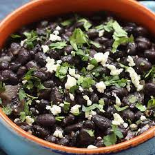

Black Beans

Description
These Mexican Black Beans are the perfect side dish for tacos, enchiladas, or any southwest inspired meal! They come together quickly and easily, and you will love how flavorful and delicious they are!
I love to make these to go with Slow Cooker Cilantro Lime Chicken Tacos or Cream Cheese Chicken Enchiladas, but they are seriously so good with just about anything! You’ve gotta try them!
Ingredients
- Olive Oil
- Chopped Onions
- Minced Garlic
- 1 can of beans
- Chopped cilantro
- Ground Cumin
- Salt to taste
Step-by-Step Instructions
- In a small sauce pan, heat the olive oil over medium heat. Add the onions and garlic and cook for 3-4 minutes, just until the onions begin to soften.
- Add the undrained black beans, cilantro, cumin, and salt. Stir well and reduce heat to medium low. Allow to cook for 15-20 minutes, stirring occasionally. Taste and adjust seasonings to your liking.
- Serve sprinkled with more chopped cilantro and cotija cheese if desired. Enjoy!